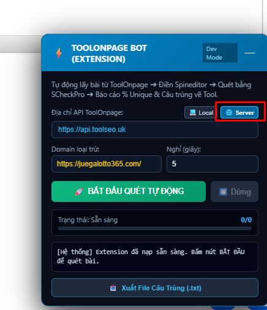
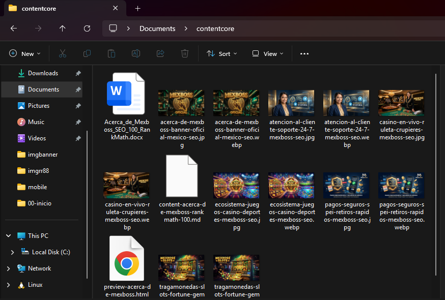

1. Tổng Quan Hệ Thống
Tool OnPage là phần mềm all-in-one chuyên nghiệp hỗ trợ vận hành và tối ưu hóa nội dung SEO WordPress:
- Tự động kiểm tra trùng lặp Spineditor: Tích hợp Bot Extension và Tampermonkey quét tự động qua SCheckPro, đo độ Unique %, bôi đỏ câu trùng lặp kèm link đối thủ và lọc bỏ domain của chính mình.
- Biên tập & Xuất bản chuẩn SEO Rank Math 100/100: Tính toán điểm số thời gian thực, đồng bộ Focus Keyword, Title, Meta Description, Slug, Canonical URL và Schema.
- Quản lý Media thông minh: Quét thư viện ảnh từ WordPress Core, tự động gán Featured Image, đối soát tránh nhân bản các file ảnh trùng lặp (-1.jpg, -2.jpg).
- Bảo mật & Phân quyền: Quản lý đa tài khoản (Admin/Member), bảo vệ bằng IP Whitelist, cơ chế chống dùng chung tài khoản (đá phiên tức thì).
2. Cài Đặt & Kết Nối Website WordPress
2.1. Kết nối tự động qua 1-Click (Khuyên dùng)
- Bấm vào nút
🌐 Quản Lý Website trên thanh điều hướng.
- Tại khung Thêm Website Mới, nhập:
- Tên website: Tên gợi nhớ (VD:
Juegalotto 365).
- Địa chỉ URL: Link trang chủ (VD:
https://juegalotto365.com).
- Tài khoản & Mật khẩu Admin: Tài khoản quản trị quyền Administrator của WordPress.
- Bấm nút màu xanh:
🚀 Tự Động Cài & Active Plugin.
- Hệ thống tự động thực hiện: Đăng nhập WordPress ➔ Tải bản ZIP mới nhất lên ➔ Kích hoạt Plugin ➔ Tự động trích xuất Secret API Key và hoàn tất kết nối chỉ trong 5-10 giây!
💡 Nâng cấp Plugin nhanh: Đối với website đã kết nối nhưng cần cập nhật phiên bản mới, chỉ cần bấm nút 🔄 Nâng Cấp Plugin ngay tại dòng website đó.
2.2. Kết nối thủ công bằng file ZIP
- Bấm nút
📥 Tải Plugin (.zip) trong cửa sổ Quản Lý Website để tải file toolonpage-connector.zip.
- Đăng nhập vào
/wp-admin của website WordPress mục tiêu.
- Vào Plugins ➔ Add New ➔ Upload Plugin ➔ Chọn file zip và bấm Install Now ➔ Activate.
- Vào menu Tool OnPage ở thanh menu trái WordPress để copy chuỗi Secret API Key.
- Quay lại Tool OnPage: Bấm nút
🔑 Dán Key tại website tương ứng để lưu kết nối.
3. Quy Trình Kiểm Tra Trùng Lặp Nội Dung (Spineditor Auto-Bot)
3.1. Cài đặt Chrome Extension (Chế độ Nhà phát triển)
- Bấm nút
🤖 Hướng Dẫn Bot Spineditor trên thanh menu.
- Bấm nút
📦 Tải Bộ Extension (.ZIP) (hoặc tải trực tiếp tại: https://api.toolseo.uk/api/spineditor/download-extension).
- Giải nén file `.zip` vừa tải ra một thư mục cố định trên máy tính (VD:
D:\ToolOnpage-Extension).
- Mở trình duyệt Chrome/Edge ➔ Gõ đường dẫn:
chrome://extensions/.
- Gạt bật công tắc "Chế độ dành cho nhà phát triển" (Developer mode) ở góc trên bên phải.
- Bấm nút "Tải tiện ích đã giải nén" (Load unpacked) ➔ Chọn thư mục vừa giải nén.
- Biểu tượng ToolOnpage Spineditor Bot ⚡ sẽ xuất hiện trên thanh tiện ích của trình duyệt.
3.2. Cấu hình Extension (LƯU Ý QUAN TRỌNG: CHỌN MỤC SERVER)
Bấm vào biểu tượng tiện ích ToolOnpage Bot ⚡ trên thanh tiện ích hoặc bảng điều khiển nổi:
🔴 BẮT BUỘC CHỌN MỤC "SERVER":
Khi mở popup hoặc bảng điều khiển Bot để chuẩn bị quét trùng lặp, bạn bắt buộc phải bấm chọn nút 🌐 Server (được viền đỏ như hình dưới) để hệ thống tự động điền địa chỉ API chuẩn: https://api.toolseo.uk.

⚠️ TUYỆT ĐỐI KHÔNG CHỌN "LOCAL":
Nếu bạn để nhầm ở mục Local (localhost), bot sẽ không thể kết nối tới máy chủ chung để lấy danh sách bài viết từ hàng đợi và không thể lưu kết quả kiểm tra trùng lặp về hệ thống!
Các thông số thiết lập chi tiết:
- Địa chỉ API ToolOnpage: Bấm nút
🌐 Server ➔ Tự động nhận link https://api.toolseo.uk.
- Domain loại trừ (Excluded Domain): Nhập domain website của bạn (Ví dụ:
https://juegalotto365.com/). Khi quét, bot sẽ tự động bỏ qua các câu trùng nếu chúng thuộc về chính website của bạn (chỉ cảnh báo khi trùng với đối thủ bên ngoài).
- Nghỉ (giây) / Delay Seconds: Điền từ
5 đến 6 giây để Spineditor hoạt động mượt mà, tránh bị giới hạn tần suất gửi yêu cầu.
- Bấm
💾 Lưu Cấu Hình.
3.3. Cấu trúc thư mục gói bài viết chuẩn & Nạp vào hàng đợi
📁 QUY CHUẨN CẤU TRÚC THƯ MỤC GÓI CONTENT (BẮT BUỘC):
Khi nạp bài kiểm tra trùng lặp hoặc nạp bài xuất bản chuẩn SEO, gói thư mục bài viết (thư mục content) cần được sắp xếp đúng cấu trúc chuẩn như hình dưới đây:

Thành phần trong gói thư mục bài viết gồm có:
- File Word (.docx) chuẩn SEO: Ví dụ
Acerca_de_Mexboss_SEO_100_RankMath.docx. Trong file chứa đầy đủ Tiêu đề bài viết, các đề mục cấu trúc (H1, H2, H3), nội dung bài viết và vị trí chèn ảnh.
- Bộ ảnh chuẩn SEO đi kèm bài viết: Định dạng
.jpg hoặc .webp, đặt tên file không dấu, ngăn cách bằng dấu gạch nối (Ví dụ: acerca-de-mexboss-banner-oficial-mexico-seo.jpg). Tên file ảnh trong thư mục phải khớp với tên ảnh đã chú thích trong file Word để tool tự động bắt cặp.
- (Tùy chọn) File markdown (.md) & HTML preview: Chứa nội dung thô hoặc bản xem trước bài viết.
⚠️ LƯU Ý ĐẶC BIỆT CHO SEOER / WRITER / AI PROMPT:
Các bạn SEOer có thể mở file docs mẫu ra để xem cấu trúc content. Khi giao việc cho người viết content hoặc dùng Prompt cho AI (ChatGPT/Claude), bắt buộc phải đi theo đúng bộ khung cấu trúc đề mục, heading và định dạng này, chỉ khác phần nội dung tùy theo từng dự án của SEOer. Nếu viết sai cấu trúc hoặc thiếu thẻ heading chuẩn, Tool sẽ không nhận diện chính xác bài viết và heading!
⚠️ LƯU Ý QUAN TRỌNG VỀ SỐ LƯỢNG FOLDER KHI CHECK TRÙNG LẶP:
Hệ thống hỗ trợ bạn nạp 1 folder hoặc nhiều folder cùng lúc. Tuy nhiên, ĐỂ HỆ THỐNG CHẠY MƯỢT MÀ NHẤT, BẠN CHỈ NÊN CHECK MỖI LẦN 1 FOLDER.
Lý do: Hệ thống Spineditor không chịu tải nổi nếu nạp 1 lần quá nhiều bài viết liên tục, rất dễ dẫn đến quá tải đường truyền và bị Spineditor kích hoạt khóa kiểm tra CAPTCHA khiến bot bị gián đoạn.
Các bước nạp vào hàng đợi kiểm tra trùng lặp:
- Bấm nút
📄 Nạp Hàng Loạt DOCX trên Tool OnPage.
- Kéo thả gói thư mục bài viết chuẩn (khuyến nghị từng folder một) vào khung tải lên.
- Hệ thống tự động đọc và phân tách Tiêu đề, H1, H2, H3, đoạn văn bản theo đúng cấu trúc.
- Bấm
🚀 Đưa Vào Hàng Đợi Quét Trùng Lặp.
3.4. Vận hành Bot quét tự động
- Truy cập trang Spineditor:
https://spineditor.com/kiem-tra-trung-lap-noi-dung và đăng nhập tài khoản.
- Bảng điều khiển nổi của Bot sẽ tự động xuất hiện ở góc dưới phải và hiển thị số lượng bài đang chờ.
- Bấm nút
🚀 BẮT ĐẦU QUÉT TỰ ĐỘNG.
- Bot sẽ tự động nạp từng bài viết ➔ Bấm nút kiểm tra SCheckPro ➔ Trích xuất tỷ lệ % Unique và danh sách câu trùng lặp ➔ Tự động gửi kết quả về Server ToolOnpage để lưu trữ mà không cần người dùng can thiệp!
3.5. Xem chi tiết câu trùng lặp & Tải báo cáo
- Tại danh sách bài viết trên Tool: Cột Spineditor sẽ hiển thị huy hiệu:
- 🟢 Xanh lá (85% - 100%): Đạt tiêu chuẩn Unique cao, có thể xuất bản ngay.
- 🟡 Vàng (70% - 84%): Cần sửa lại một vài câu.
- 🔴 Đỏ (< 70%): Trùng lặp nhiều, bắt buộc phải viết lại.
- Bấm nút
👁️ Xem Trùng Lặp: Toàn bộ các câu bị trùng lặp sẽ được bôi đỏ nổi bật kèm đường link website đối thủ đang có câu tương tự.
- Bấm nút
📥 Tải File Câu Trùng Lặp (.txt) để xuất riêng các câu lỗi gửi lại cho Writer biên tập lại.
4. Biên Tập & Bơm Dữ Liệu Chuẩn SEO Rank Math 100/100
Khi nạp gói nội dung vào Tool OnPage và bấm nút ✏️ Soạn Thảo & Tối Ưu trên bài viết:
📁 CẤU TRÚC FOLDER BẮT BUỘC ĐỂ BƠM RANK MATH CHÍNH XÁC:
💡 Đồng bộ hình ảnh & nội dung tự động: Nhờ nạp đúng cấu trúc gói thư mục gồm file Word .docx và bộ ảnh chuẩn SEO như hình trên, Tool OnPage sẽ tự động nhận diện chính xác toàn bộ vị trí ảnh trong bài, tự động đối soát với Media Library và tự động gán Ảnh đại diện (Featured Image) mà không bao giờ bị lệch ảnh hay thiếu ảnh.
⚠️ QUY TẮC CẤU TRÚC BÀI VIẾT CHO AI VÀ WRITER:
Các bạn SEOer có thể mở file docs mẫu ra để xem cấu trúc content. Khi giao việc cho người viết content hoặc dùng Prompt cho AI (ChatGPT/Claude), bắt buộc phải đi theo đúng bộ khung cấu trúc đề mục, heading (H1, H2, H3) và định dạng như file mẫu, chỉ khác phần nội dung tùy theo từng dự án của SEOer. Nếu không đúng chuẩn, tool sẽ không nhận diện chính xác nội dung và không bơm đủ điểm Rank Math 100/100!
- Quản lý Media thông minh: Khi tải ảnh, hệ thống tự động đối soát với thư viện WordPress Media Library. Nếu ảnh đã có trên hosting, công cụ sẽ dùng lại URL gốc, không tải lên nhiều lần làm sinh ra các ảnh rác đuôi
-1.jpg, -2.jpg. Có nút 🧹 Dọn Dẹp Ảnh Trùng để làm sạch hosting.
- Gán ảnh đại diện (Featured Image): Chọn ảnh bất kỳ trong bài bấm
🖼️ Đặt Làm Ảnh Đại Diện, plugin sẽ gọi trực tiếp hàm WordPress Core để gán chính xác trên mọi Theme.
- Tối ưu Rank Math SEO theo thời gian thực (Bơm Metadata 100/100):
- Điền Từ khóa chính (Focus Keyword): Điểm số SEO (0-100) sẽ tính toán tức thì theo thuật toán Rank Math.
- Tối ưu Tiêu đề SEO (Title Tag), Mô tả Meta (Meta Description 140-160 ký tự), Slug đường dẫn tĩnh và Canonical URL.
- Xuất bản trực tiếp: Chọn trạng thái Bản nháp (Draft) hoặc Xuất bản (Publish) ➔ Bấm
🚀 Xuất Bản Chuẩn SEO Lên WordPress. Bài viết và toàn bộ metadata Rank Math sẽ hiển thị trên web sau 2-3 giây.
📦 Tham Khảo File Mẫu Bơm Rank Math:
Xem định dạng file Word chuẩn có sẵn cấu trúc Focus Keyword và Schema để đạt điểm tối đa 100/100.
📥 Tải File Demo Content Mẫu